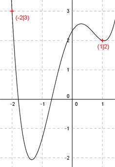

Aufgabe 90 Die zweite Ableitung einer ganzrationalen Funktion 4. Grades lautet 12x2 - 6. Ihr Graph geht durch (1|2) und (-2|3). Wie lautet seine Funktionsgleichung?  Allgemeine Form einer ganzrationalen Funktion 4. Grades: f(x) = ax4 + bx3 + cx2 + dx + e f’(x) = 4ax3 + 3bx2 + 2cx + d f’’(x) = 12ax2 + 6bx + 2c 5 Bedingungen: 1. Die zweite Ableitung lautet 12x2 - 6 bedeutet: 12x2 - 6 = 12ax2 + 6bx + 2c Koeffizientenvergleich: 12a = 12 |:12 a = 1 2c = -6 | :2 c = -3 b = 0 Damit sind 3 Bedingungen erfüllt. 2 weitere Bedingungen: 2. Geht durch (1|2) bedeutet: (a = 1 und b = 0 und c = -3 eingesetzt) f(1) = 2 --> 1 * 14 - 3 * 12 + d * 1 + e = 2 --> 1 - 3 + d + e = 2 --> -2 + d + e = 2 |+2 --> d + e = 4 I 3. Geht durch (-2|3) bedeutet: (a = 1 und b = 0 und c = -3 eingesetzt) f(-2) = 3 --> 1 * (-2)4 - 3 * (-2)2 + d * (-2) + e = 3 --> 16 - 12 - 2d + e = 3 --> 4 - 2d + e = 3 |-4 --> -2d + e = -1 II I * 2 + II 2d + 2e = 8 - 2d + e = -1 3e = 7 |:3 e = 7/3 e = 7/3 in I eingesetzt: d + 7/3 = 4 |-7/3 d = 12/3 - 7/3 = 5/3 Gesuchte Funktionsgleichung: f(x) = x4 - 3x2 + (5/3)x + 7/3